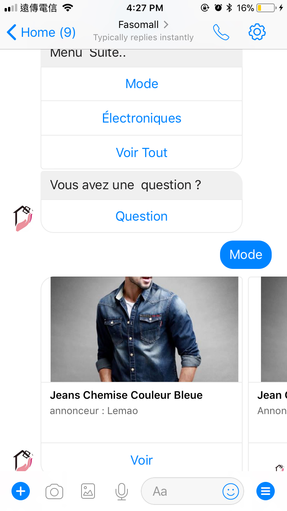

Increasing numbers of consumers are turning to social media messaging, including Facebook Messenger, to contact businesses with questions, comments, and complaints. While there are tools that will help you manage the influx of customer messages, sometimes they’re just not enough, particularly when social users are accustomed to a timely response from you. Facebook Messenger chatbots will let you automatically provide consumers with immediate responses. They can answer basic questions like “What is your return policy?” (even though it’s posted in three different places on your site), freeing up your customer service team to handle more serious customer concerns or issues.
IN 2016 i started a small online product listing website Named Fasomall,the first two months were easy to keep up with the users inquiries on Facebook as i had not reached a considerable level of online traffic. But as the number of the page followers increases i then realized that some inquiries are frequent and replying soon became very annoying. I wrapped up most of the frequent questions(where are you located? how can i purchase fromyour website? how to register? how to list an article ? etc ) from the users and made some introduction posts and video . Unfortunately , this wasn't enough as i still had to reply to some users asking them to refer to those videos or posts , a bot was then definitely the solution.
3 reasons why you should use a bot
1. Deliver Personalized Content Experiences
Some businesses use chatbots to focus solely on content; the chatbots serve as an extension of their content marketing strategy. These bots nurture relationships with clients and provide immediate value without any work on the user’s part.
For example Fasomall provides with the users the desired content along with a pleasing and personalized chat as shown in the picture below.

When the users type on "Voir" they are redirected to the product on the website where they make the purchase.
2. Answer Common Customer Service Questions
One popular use of chatbots is to provide customer service. If your customer service team is asked the same questions over and over, a chatbot is a great way to field some of those questions. You just have to teach it what to say. As i was stating above automating the common and frequent questions got me off the hook and a lot more time for other stuff like doing some updates on the website, focus on marketing surveys, partnerships etc.
3 . Cultivate Connections via Entertainment
If you want to build and nurture relationships with your customers, consider designing your chatbot simply to entertain them (assuming this approach fits with your brand). Users can opt to receive future messages from you, and you can send fun facts, games, and content meant purely to entertain them.MotivatBot does a great job with that , i subscribed to their bot and receive a motivation message everyday at 8 am
How to Make your own bot from scratch
Visit opendarasa and get a free Nodejs source-code to start with.
By Jean Ouedraogo from Opendarasa. Photographs by Opendarasa.